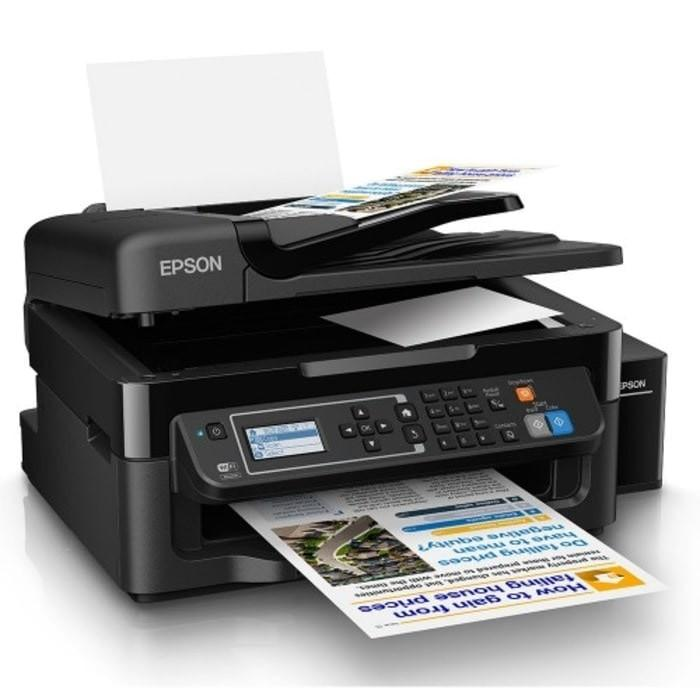
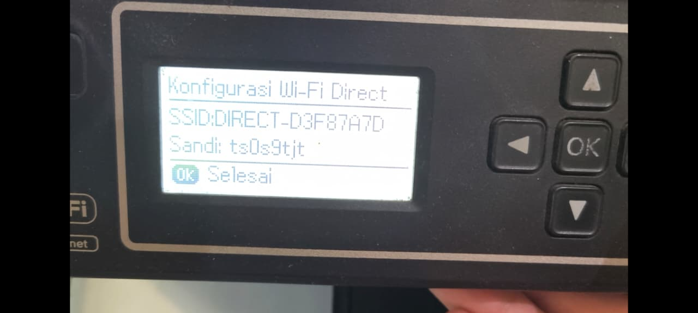

Penjelasan Masalah
Kebutuhan untuk mencetak banyak tapi akses printer sulit atau penempatan komputer dengan printer jumlah solusinya adalah printer modern sudah menyiapkan fitur print melalui wifi.
Langkah Penyelesaian
- Pada tutorial ini model printer yang digunakan adalah Epson L565. 
- Sebelum memulai mencetak pastikan perangkat komputer/laptop sudah terhubung dengan wifi printer caranya dengan menggunakan wifi direct pada navigasi printer.
- Langkahnya adalah masuk ke Wi-Fi Setup kemudian pilih Wi-Fi Direct Setup kemudian mulai dan ok tunggu sejenak maka akan muncul tampilan seperti gambar dibawah. 
- Setelah itu hubungkan wifi komputer/laptop dengan SSID dan masukkan kata sandinya.
- Saat mencetak dokumen pastikan printer dengan SSID yang terpilih untuk mencetak.